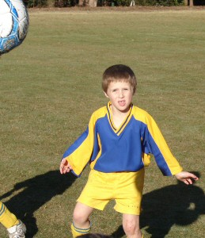
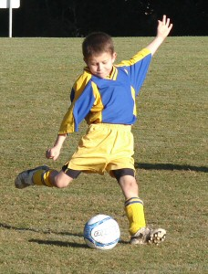
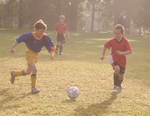
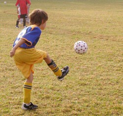
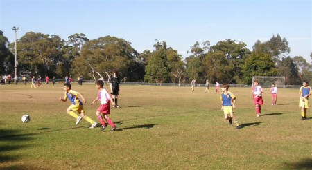

| Match Report - 31 May 2008 |
|
|
|
|
|
|
|
| U6 Red B |
North Ryde 5 - Ryde Saints United 5

|
|
|
|
Last week we played the Saints C's, and this week it was their A's, and what
another 'ripper' game it was. It had to be one of the closest match-ups, and
hardest-fought games for our team this season! Our first task, well the team
members I lead down the garden path anyway, was to find the field hidden over
behind the full size field. Who would have figured they'd put Field 2 a full
150 metres away from Fields 3,4 & 5! Anyway, thanks to Aden and Troy (and
respective parents), we ended up at the right field, on time.
Once we got our interchange set, and finished paying out on the coach for
losing the field, we got down to playing some great soccer. With such a tight
game there was immediately a lot of play happening in the forward and back,
with Aden, Arlen and Alex W up and down the field like yo-yos. Again Troy
supported well in defence, and cleared some good balls well forward to turn
the game quickly when needed. When our subs Zoe and Alex C came on, it was a
timely rest for Alex W and Aden after a highly paced 1st 5 minutes. They
picked up the pace straight away, with Zoe pushing the game upfield on
numerous occasions, and Alex C supporting Troy well in moving some good balls
forward. The next round of subbing gave Troy and Arlen a well deserved rest
after 10 minutes in this hard-fought battle. Aden and Alex W came back into
the attack to support Zoe, with Alex C dropping back in defence.
The second half was as hard-fought as the first, and as per the score line,
neither team was able to get their nose ahead. Well done again on a great
game team!
Best Team Work Award: Aden Shepherd
Best Ball Skills: Alex Wylie
- Rob Wylie (Coach)
|
|
|
| U6 - White A |
North Ryde White Knights - Ryde Saints United B

|
|
|
|
It was another gorgeous Saturday morning at Magdala with the under 6 White
Knights raring to go in their warm-up session with Coach Wayne. Unfortunately
by 9.30 it was looking like the opposition was a no show. After a few hasty
calls, draw and watch checking, we were suitably satisfied that we were in
the right location at the right time and that our opponents had in fact heard
of our reputation and decided not to show
Quick thinking by our coach and a dash to the station wagon to get dressed
by Hayden gave us enough players to have a mini match between ourselves. The
kids were divided into two equally matched teams and Wayne proceeded to make,
what may have been a disappointing morning for the boys, into a fun game and
training session. After sorting out the shirts and the no shirts (Elena
refusing to allow the boys to play in their singlets) we saw some fantastic
teamwork and maneuvers by the two teams.
The boys seemed oblivious that the other team had not shown up and had a
great morning, enjoying half-time oranges and the usual trappings of a proper
game. Player of the match went to Dimitri,
performing some lovely kick-ins and showing that he will be the man to watch
next year when he is one of the bigger guys in the squad.
- Janine
|
|
|
| U6 - White B |
|
North Ryde White Knights - All Saints Hunters Hill A
|
|
|
|
North Ryde U6B (white) played a hard fought and determined match against
Hunters Hill at Magdala on Saturday 31 May.
Each of the team distinguished themselves against a well drilled opposition.
Daniel displayed great attacking play scoring a 1st half goal, and asserting
himself in man-on-man defence. Jasmine, Ben, and Hayden played unfaltering
defence until late in the game when Jasmine was sidelined by a lingering
stomach upset, soon followed by an unfortunate head clash which slowed
Hayden's cracking pace. Henry was like glue on the ball, wherever the game
was he was right amongst the action. William H took the advise the Coach had
instilled in him at training and pre-match. His assertive tackling and
breakaway play showed great improvement this week, earning him Player of
the Week.
It was an outstanding team effort, with enthusiastic support from the family
and friends on the sidelines.
Well done Team, Coach, and Parents.
- Bill Hanley
|
|
|
| U7 - Green |
|
North Ryde Koalas - Ryde Saints United B
|
|
|
|
As much as I am loathe to quote that now trendy overly used colloquialism
'our boys (and girl) just didn't turn up to play today', I would be lying
if I did... they did turn up to play... only it was at the new and improved
play area at Fontenoy Park instead of the football field!
Just joking... buoyed from their resounding performance from last week, the
Koalas lapsed into some old habits, forgetting some of their basic skills
learnt in recent weeks. Added to this the fact that they were up against a
very polished outfit who were relentless in both attack and defence. Reading
this so far you would think we didn't have any good performers on the day!
Far from it, in fact games such as this one often bring out the best in
players and this was certainly the case.
A special mention to James who 'played out of his skin'. Normally a very
steady and reliable player, James looked like he had something to prove
today and he did just that. Displaying some fine pull-backs and excellent
tackles, James was right up there in the Player of the Match polling. Our
usual suspects, Charlie and Jarvis, once again did a mountain of work at
both ends of the field. In an attempt to slow Jarvis down, the coaching
staff is thinking of making him run to Magdala from home this Saturday!
Trying very hard as always but having to do a lot of chasing and defending
were Jack, Lioda and Hugh. It's wonderful to see the amount of effort that
all three of them put in right up until the full time whistle even though
they were up against some slick opposition.
Our Player of the Match this week was Daniel. He has really come a long way
this season, showing a really willingness to get 'touches' of the ball and
not being intimidated by opponents. Daniel was brilliant pulling off some
despairing tackles and putting his 20kg frame on the line.
I guess when you see some professional sporting teams 'not turning up' it's
understandable that an U7 kids soccer time may be guilty of a similar thing
from time to time... particularly when there is the lure of a whiz-bang
kid's playground to be used!
- Paul Bonaventura
|
|
|
|
|
|
The journey to Kenthurst might not be the trek to Western Australia that
it seems, but it certainly feels like it when you've dragged everyone out
of bed before sunrise and find yourself meandering through the remote and
foggy hinterland of the vast northern Sydney outback

The Blues were all there, however, on time and raring to go, but they
started the game in what has now become their trademark fashion - allowing
the opposition to score two quick goals within the first five minutes of
the match. The Kenthurst team, it must be said, were a well-drilled side
that played with a lot of skill and discipline and gave the impression that
their early lead was just the start of many things to come. But as usual,
the cogwheels of the Blues team soon fell into place and they levelled
the score with some blistering movements up the field shortly afterwards.

There were some terrific performances on the field, from both teams, and
the spectators were treated to a good all-round game of football. There
was Patrick, for instance, who proved invaluable
in the midfield with his high work-rate and persistent determination to
move the ball forward. And there's always young
Tom H, scourge of the opposition strikers, who
has no equal in the manner in which he steals the ball off his player and
lays the foundation for surge after surge toward goal.
Christopher and Tom O
both took up defensive midfield positions and were repeatedly successful
in keeping Kenthurst at bay with good tackles and passing shots.
Man-of-the-match Adam continued his dribbling
wizardry and is always on the lookout for that long-range shot at goal that
he loves so much. And there's always a bit of a buzz when
Eli gets hold of the ball, because anything can
happen from that point onwards
Jack had an outstanding day on the field,
setting up many scoring opportunities with some prolific runs and attacking
movements towards goal. David and
Charlie had some blistering runs up the track and
continue to impress with their passing and switching game when it counts the
most. And how about the flawless game of football that
Shannon delivered today, both in goals and on
the field? He was responsible for two of the goals that essentially turned
the tide of the Kenthurst onslaught in the first half of the game, and few
of us will forget the outstretched hand that saved a sure goal late in the
second half to all but take the wind out of their sails.
It was a good game of football all round, and neither team were prepared
to give an inch right up until the final whistle. The match was clean and
played in good spirit, and the Kenthurst management, it must be said, were
a refreshing change to the dreary run of rather possessive coaches we'd
encountered in our last few matches

Thanks also to all the parents and family for making it to 'Perth' on time,
and a special thanks to Paul who was barking out helpful and constructive
advice to the players throughout the game

- Mark Howard
|
|
|
|
|
|

It was a dark and thundery night for training on Wednesday. Unfortunately,
the hailstorm meant that we did not have our usual training session but
the weather changed on Friday and the game on Saturday went ahead.

However, missing training may have been a problem as our Green team did not
perform that well. It was very foggy in the morning at 8:30am, and we lost
0-7 to Putney Rangers.
Our positioning and support were lost too. Besides that, we also missed
Peter, Andrhea, Jerry & Satya on the day. Some of players were busy talking.
I know that you need to communicate, but not for long periods during the
game. The team spirit was low. You could hear a lot of shouting from the
parents and not much response.
Poor Rhea was not well but still tried her best to attack. However, the
Rangers were a strong team and we missed 2 chances. Ryan tried his best to
save a lot of goals. Without his efforts there might have been more damage
to the scoreline. He deserved the Player of the Week award.
I hope we learn from this defeat and fare better next time. We can do it.
If you try your best, then it does not matter whether you win or lose. Its
called sportsmanship.
Green Team - we need to concentrate on our position and support.
WE WILL BE BACK!
- Mandy Van
|
|
|
|
|
|
Everyone back and roaring to go!
Everyone very keen to use their newfound knowledge on keeping positions and
kicking the ball and then running - preferably into free space!
Josh and Timmy
showed us all how good they are at this new skill and during the game all
players followed suit. From the sideline, it actually looked somehow
structured with the players conscious of where they should be at any given
time. Harrison was great in moving back in defence
to help out and then zooming up in attack. Taylor
did a few great tackles (the ones that make a big noise) and
Ben took a great long throw to
Julian who threaded the ball to
Maggie who slotted a great goal.
In the second half, Brooke was sensational in
goals and we were very unlucky not to score a couple and against the run
of play - right on full time, Ravens got the equalizer.
It felt like a win anyway and player of the match
Kireth was pooped after his busy committed game,
Thomas ran like a train all game with some big
clearing kicks, Luke was very effective in defence
with some great last minute clearances. Encouragement award went to
Josh. He listened and saw how effective he could
be by keeping his position and running to free space.
A great effort from everyone, we just can't wait till training and next
week's game to try these great new skills of running, thinking and helping
each other out. Win lose or draw, this little team of champions just enjoy
getting out each week and having a go!
- Andrew Curdie (Coach)
|
|
|
|
|
|

A glorious sunny day at North Ryde Oval and the BBQ cranked up with our
fearless leader Mark Simpson on cooking duty.
NRS applied the pressure early into the game and moved into WPH half of the
field. NRS had a few attempts at goal with some good passing between players,
but alas we just couldn't manage to follow through and score. Ben made a
lofty kick into the goal box which was unfortunately saved by the WPH goal
keeper.
There was a break with a pass from Frazer to Alex and then on to Aymon,
but the WPH defenders just outran him and intercepted the ball. William passed
to Tom who then ran the full field towards WPH goal unmarked, until he came
close to the goal and the defenders managed to take possession of the ball.
In the second half there were a few adjustments made to the NRS line up with
Ryan and Josh going into defence and Isaac into the forward line and later
Lachlan placed into midfield.
Jared had a few successful saves in goal including a high well-struck shot
towards the top corner of the goal net.
- Lesley Campbell (Manager)
|
|
|
|
|
|
Well what can I say?
I best start at the beginning and lead you into the action. Our opponents
wore BLACK and some say it's the colour of their hearts. Well, there are
a few of us who know from experience that it's not the colour, it's the fact
that they have no hearts or conscience. This match between the competition
leaders was always going to be tough and both teams were starting to show
the signs of trepidation.
With Gaelyn as Captain, Ellen in goals, and the whistle blown the
Wildcatz were straight into their usual
attacking play and working hard in the oppositions half. As has become the
norm, the girls instantly put together triangles and passing manoeuvres that
made the BLACKRATS look very ordinary. Their defence was being tested time
after time with our shots, either just missing the target or their goalie
saving the day. As they say, we were RATTLING the cage!
I'll admit the RATS had a couple of breaks but they were quickly cut short
by our defensive line of Paula, Gaelyn, Lee and Daf.
I believe the Wildcatz dominated the first half
but unfortunately the score didn't reflect the momentum of play, and it
remained nil-all at half time. North Ryde was carving them up and they didn't
really have a reply!
In the first half, our positional structure was very good, which let us
control 95% of play and also made our goalie Ellen a lucky hero. I hope
everybody read last week's report where I explained my philosophy on goal
keeping. Amany was hesitant to take on the goalies job for the second half
but after being told she wouldn't have to do it again for a long, long time,
she was ready... well reluctantly. With TESS's words of wisdom, our girls
were back on the field and with just a little 'bit of luck' or 'fairy dust'
we would have the game in the bag.
I encourage equal game time for all the team members and no one player owns
a single position. In the short term this philosophy may cause problems but
over the season, you end up with players who can play multiple positions with
greater confidence and normally they play far better in their preferred
position. As a result, we caused more disruption than desired to our structure
and this gave the Rats the opportunity to get into our goal area. As TESS put
it, 'it wasn't anybody's fault, it was the first time that
we have had to defend our line against an attacking team, we'll learn from
this and we'll know what to do next-time'.
It doesn't matter if you're a right back, left mid or goalie, what you have
to do is BELIEVE IN YOURSELF AND ALWAYS BE POSITIVE. Everybody makes mistakes,
it's part of life & learning, but in sport you simply put those moments
behind you instantly and try again. REMEMBER THE POSITIVES and don't worry
about the negatives. Recover and enjoy the moments that give you the best
feelings and a sense of accomplishment. It's like the little train climbing
the hill, I think I can, I think I can... and as she got closer to the top...
I know I can, I know I can.
The second half, and again the Wildcatz
dominated 80% of the play but just couldn't hammer in a goal. It was
disappointing to see the RATS gain an advantage against the run of play and
as the minutes ticked down we weren't able to pull back the score. It wasn't
through lack of trying, because the Wildcatz
gave their best on the day, we on the sideline just made
it harder than necessary.
A great coach of mine would say, 'you win with dignity and you lose with
dignity'. Today you impressed TESS and all your Mums & Dads by displaying
that wonderful attitude. You were still able to smile and congratulate each
other, for each other's efforts on a difficult day. We're excited by your
sporting achievements, but more importantly we are very proud of the manner
in which you displayed yourselves, we feel we are lucky parents.
You can bet the Ravens aren't in any hurry to play us again because overall
they just couldn't match your skills or passing techniques, they know they
were lucky on the day and next time we'll make sure 'The Rats are kept in
the trap'.
Go Wildcatz!
- David Burn, with Stories from the Sideline
|
|
|
|
|
|
First half highlights
The boys that were fit from last week's clash turned up to gallantly face the
undefeated West Pennant Hills (WPH) on their home turf. Injuries a plenty
dogged the Nth Ryde boys which meant the game was going to be interesting and
they would have to dig deep as there were only two replacements available.
Smithy had made sure that Pommie Pete was going to make it to the right ground
this week, he had called Pommie Pete, provided him with a GPS, a print out
from 'whereis.com', given him a map of the ground and also made sure Pommie
was following someone to the ground - just to make sure he would get there!
You can't take any chances with Pommie and Smithy knows him all too well!
So it was game time, the boys had applied the liniment, and the girls had
provided the rub down, Nth Ryde had to just put it together on the day. The
game as always started with a flurry and WPH were given an early chance with
a North Ryde handball close to the box. Macca was under some early pressure
playing as the replacement keeper for the injured Agro. It would seem Macca's
skills with years of keeping were going to be needed today and he certainly
didn't disappoint.
Nth Ryde moved the ball around but WPH had players on the spot and then
hammered a ball into the back of the net. 1-0 WPH - time to put good football
together boys.
From the kick off Nth Ryde put the pressure on and Pierre turned on a nice
ball, hit it sweetly but as has been the case all season, the keeper was on
the spot to pull off a save. The play then moved from end to end, Brownie
began to bark at the boys again - this seemed to lift them (and annoy the
opposition - I overheard them saying that the guy with the long hair down the
back was CRAZY - do they hang out with you Brownie?). Brownie also controlled
the ball nicely from the back and Hicko seemed to be having a blinder.
Nth Ryde were playing some good football, it was enjoyable to watch and I
couldn't take my eyes off the game (or the Nth Ryde keeper!). I actually had
the feeling that if the boys did the little things right they would come home
with the win, they had great pressure and the balls were being placed
perfectly today. A couple of shots on goal from Pommie and Flocko (AKA - Go
Gary Go) were off target but the chances were there. Nth Ryde just needed to
capitalise. A call of 'possession' from Brownie reminded the boys of their
aim. The anticipation was building and it was time for the crowd to get
involved. A couple of shouts of 'Go Gary Go' and 'Firgalicious' were needed
from the sideline to spur the boys on. The opposition did not like the team
environment that Nth Ryde was displaying! The first half continued on with a
couple of shots on goal traded with no result.
North Ryde 0 - WPH-Cherrybrook 1
Second half highlights
West Pennant Hills had been fired up with the half-time break and showed it
from the outset. Macca saved a hard hit from the WPH striker a Geoff Smith
cleared to safety. Nth Ryde then kept up the pressure. Pommie Pete got dragged
down in the box and the aggression from WPH was starting to show. Mark VH put
his hand up to take the penalty and it went like this... the referee cleared
the box, Mark lined up, the keeper was checked by the ref, ref blew his whistle,
Mark moved in, left foot strike to the left hand side of the net, YES, ball
finds inside of net, the crowd goes wild. 1-1 and Nth Ryde were on the march!
WPH got fired up by the goal and the play started to turn nasty. Sportsmanship
seemed to go out the window. A bright midfielder decided that he no longer
liked our beloved Pommie Pete and socked him a good one on the cheek. Pommie
had thought he was in the ring with Anthony Mundine. Things turned ugly,
Pommie got a red card and to our dismay the WPH midfielder only received a
yellow card. This bought the rest of the crowd to the sideline, things were
certainly HOT!
Nth Ryde fired up from all of these going on's and kept the pressure up.
Pierre had a great shot on goal which missed by a millimetre. The talk on the
sideline was amazing, I lost track of reporting about the football because
what was being said on the sideline was enthralling!
Then it happened, Nth Ryde received a free kick about 25 metres out to the
left of the goals. Hicko took the shot, Darren Mac called 'go for goal' and
that's just what Hicko did. He had hit a blinder and it turned out to be the
winning shot. The only thing Hicko was happy about was that he didn't have to
buy a case of beer at the end of season get together! The crowd went wild,
Nth Ryde were playing with ten men and were beating the competition front
runners 2-1. The calls from the boys on the sideline regarding the time were
hilarious. The referee had a lot to deal with. Then he finally blew his
whistle. The boys had won! The game was brilliant and the boys sung the Nth
Ryde song with gusto. I'm sure the beers tasted good.
The team had played brilliantly and Macca had saved the day with some dazzling
keeping. Nth Ryde had done themselves and their coach proud. I can't wait for
next week's game boys - except for the fact that it's on too early! See you
back at Nth Ryde oval.
North Ryde 2 - WPH-Cherrybrook 1
- FF
|
|